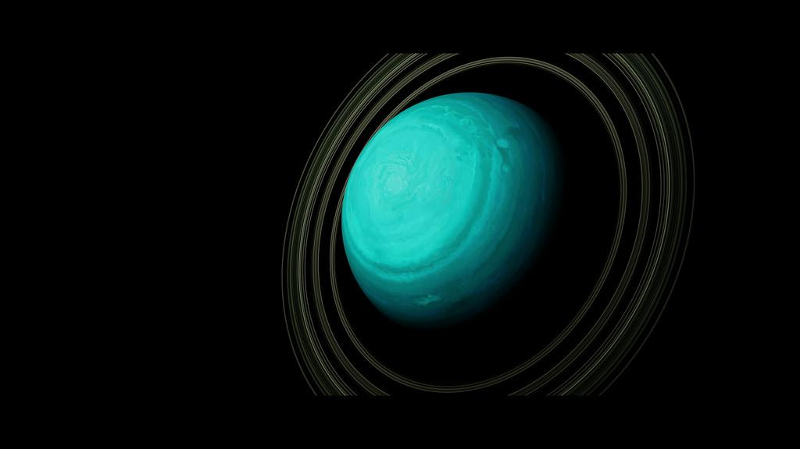
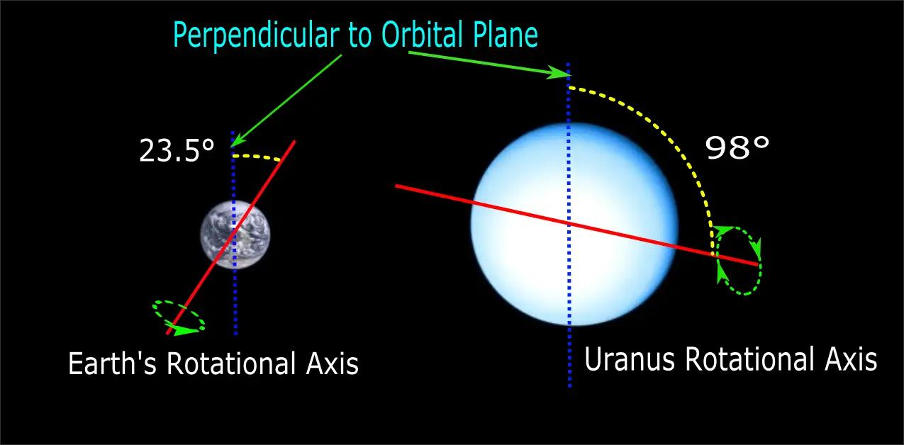
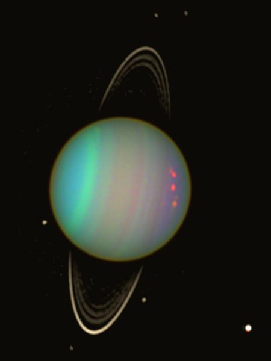
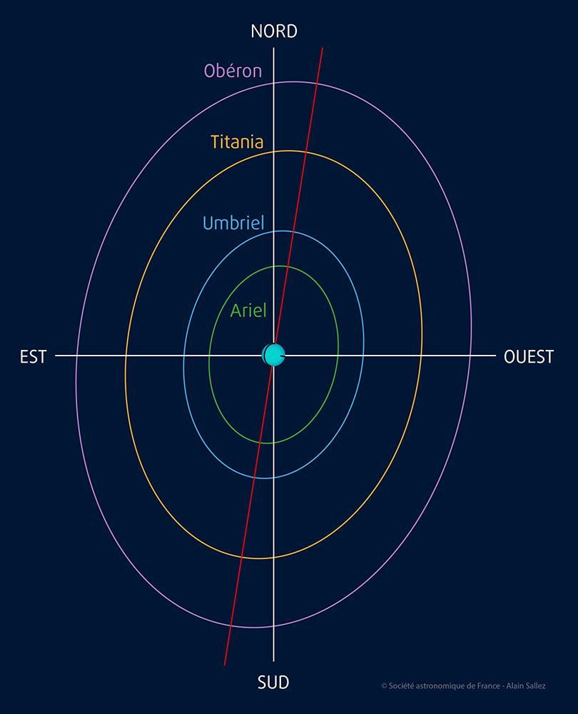
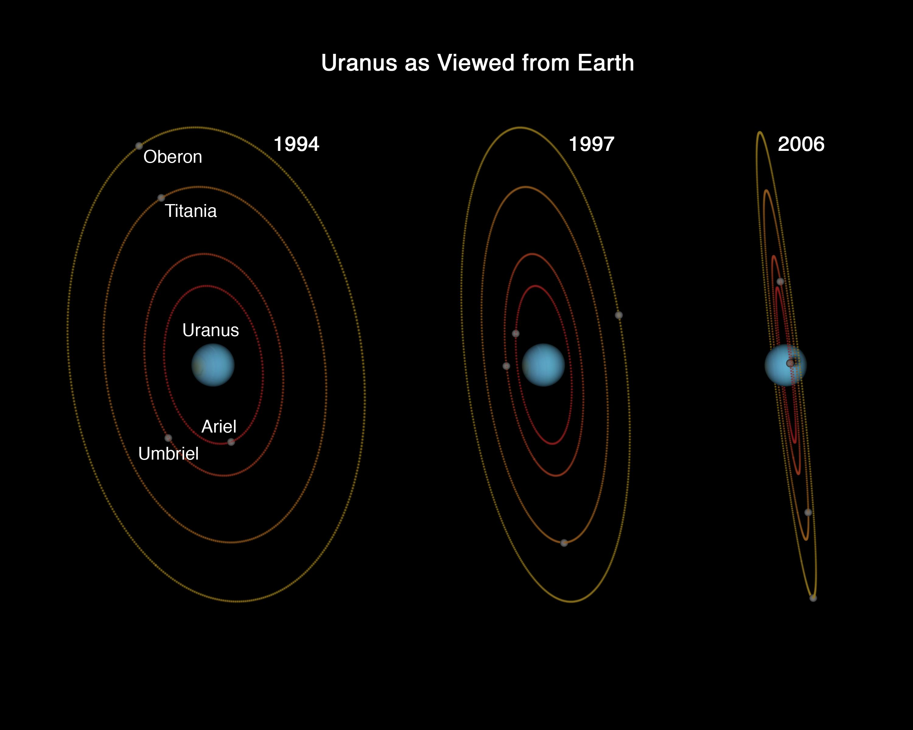
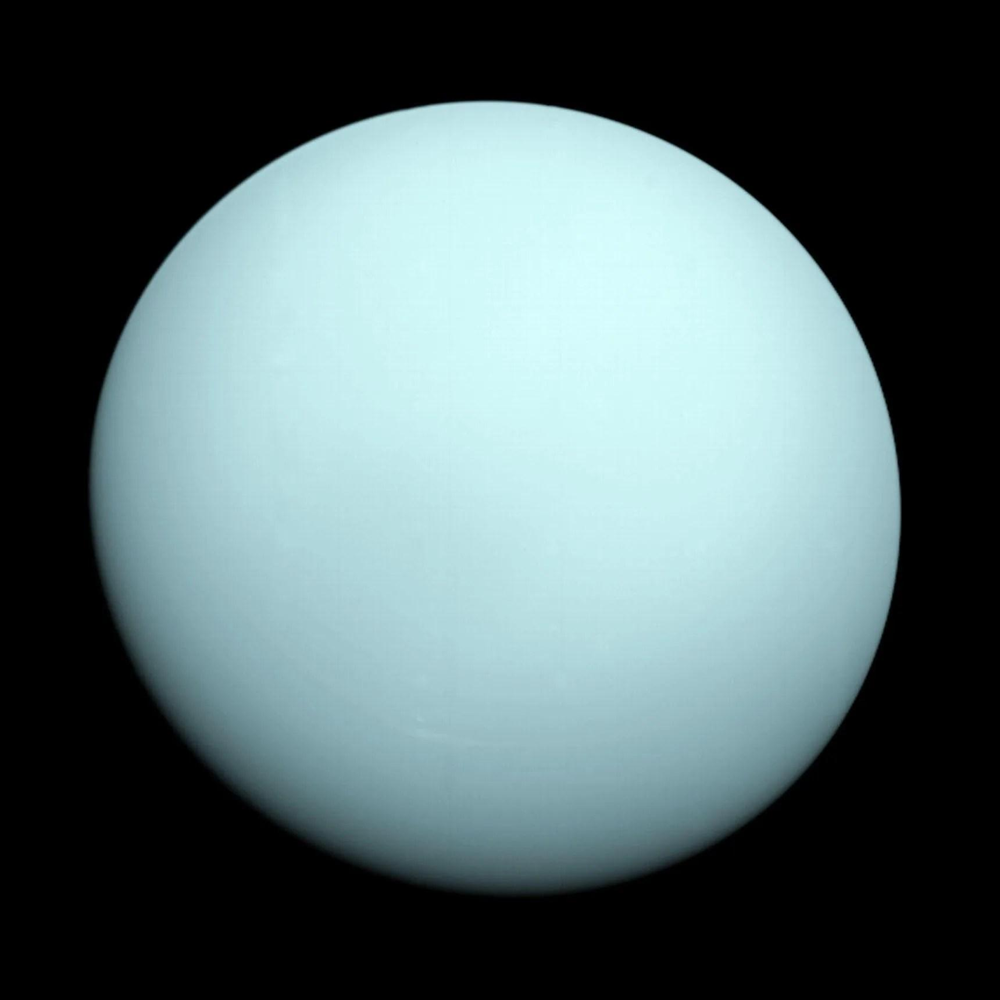
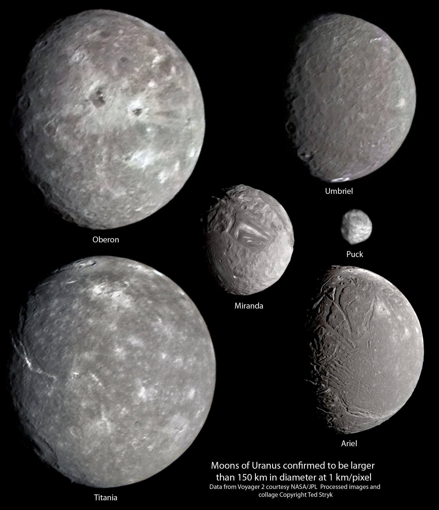

Miranda
Miranda is known for its unusual, patchy surface.
Uranus is the seventh planet from the Sun and is known for its unique blue-green color and unusual rotation.
It is classified as an ice giant, similar to Neptune, meaning it is composed largely of icy materials like water, ammonia, and methane.
Discovered in 1781, Uranus was the first planet found using a telescope, marking a major moment in astronomy. Unlike other planets, Uranus stands out because it appears to roll around the Sun on its side.
Discover More ›
Uranus — the sideways ice giant of the solar system.

Uranus rotates almost completely sideways.
One of the most distinctive features of Uranus is its extreme tilt. It is tilted at about 98 degrees, rotates almost completely sideways, and appears to roll along its orbit.
This unusual tilt causes extreme seasons. Each pole can face the Sun for about 42 years, followed by 42 years of darkness.
Uranus has a soft blue-green color due to methane gas in its atmosphere, which absorbs red light and reflects blue and green wavelengths.
Its atmosphere is made of hydrogen, helium, and methane. It appears smooth and less detailed compared to Jupiter or Saturn, but it still contains clouds and occasional storms.

Methane gives Uranus its soft blue-green color.

Uranus is the coldest planet in the solar system.
Uranus is the coldest planet in the solar system, even colder than Neptune. Temperatures can drop to around -224°C.
This is because Uranus produces very little internal heat compared to other giant planets.
As an ice giant, Uranus consists of a thick gaseous atmosphere, a mantle made of icy materials, and a small rocky core.
There is no solid surface, and the deeper layers become increasingly dense under pressure.

Uranus is an ice giant with no solid surface.
Uranus has a faint ring system made of dark particles that are difficult to see. It also has 27 known moons, many named after characters from literature.

Miranda is known for its unusual, patchy surface.

Ariel is one of the brightest moons of Uranus.

Umbriel, Titania, and Oberon are also important moons of Uranus.
Uranus has faint rings made of dark particles that are hard to observe.
One day on Uranus is about 17 hours.
One year on Uranus is about 84 Earth years.
Uranus has a 98 degree tilt and rotates on its side.
Because of its sideways tilt, Uranus has very unusual seasonal patterns.
Seventh planet from the Sun
Rotates on its side with a 98 degree tilt
Coldest planet in the solar system
Blue-green color due to methane
Has faint rings
Has 27 moons
Long orbit around the Sun
Uranus is unlike any other planet because of its extreme tilt, which completely changes how it experiences seasons and sunlight.
Instead of spinning upright, it rotates sideways, making it one of the most unusual planets in the solar system.
Its cold temperatures, faint rings, and calm appearance make it mysterious, while its internal structure and composition help scientists better understand the formation of ice giants.
A video exploring the planets in our solar system.